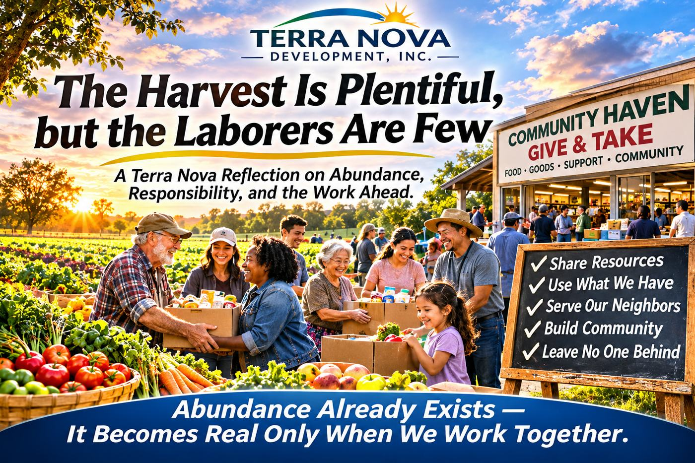

Article #010 · November 2026
The Harvest Is Plentiful, but the Laborers Are Few
A Terra Nova reflection on abundance, responsibility, and the work ahead.

By Willis Butts · Terra Nova Development, Inc.
A Terra Nova Reflection on Abundance, Responsibility, and the Work Ahead
There is an ancient line that has echoed across centuries:
“The harvest is plentiful, but the laborers are few.”
It was true then, and it is even more true now — not in a religious sense alone, but in a human, social, and civic sense. It describes the condition of our world with almost surgical accuracy: we have more abundance, more resources, more knowledge, and more capability than any civilization before us — yet too few people are organized, empowered, or willing to do the work of turning that abundance into human wellbeing.
The harvest is everywhere.
The laborers are scattered.
The systems to connect them barely exist.
This is the crisis of our age — and the opportunity of our lifetime.
I. The Harvest We Already Have
Look around any modern city, any town, any neighborhood. You will see:
food wasted daily while families go hungry
empty buildings while people sleep outside
unused skills while communities struggle
surplus goods while households lack basics
loneliness in a world overflowing with people
institutions drowning in bureaucracy while needs go unmet
We are not suffering from scarcity.
We are suffering from disconnection.
The harvest is not theoretical. It is real, measurable, and overflowing:
supermarkets discard tons of food weekly
stores rotate out non-food goods that could serve thousands
tradespeople retire with decades of knowledge unshared
youth possess digital skills that could transform communities
elders hold wisdom that could stabilize generations
public spaces sit idle for most hours of the day
human compassion exists in abundance, waiting for direction
The harvest is plentiful.
It always has been.
II. Why the Laborers Are Few
The problem is not that people don’t care.
The problem is that our systems are not built for participation.
We have created a world where:
bureaucracy blocks compassion
help requires paperwork
support requires eligibility tests
resources require permission
volunteering requires navigating red tape
institutions are overwhelmed and under-coordinated
people feel powerless because the system is designed to centralize power
Most people want to help.
Most people want to contribute.
Most people want to be part of something meaningful.
But the pathways are broken.
The laborers are few because the infrastructure for labor does not exist.
III. The Work Terra Nova Calls Us To Do
Terra Nova — and the Haven blueprint — begins with a simple truth:
The harvest becomes useful only when laborers are organized.
Not controlled.
Not commanded.
Not politicized.
Organized.
The work ahead is not ideological.
It is architectural.
We must build systems that make it easy for people to help one another:
Community Havens where everything is freely given and freely taken
Overflow redistribution networks for food and non-food goods
Hygiene access for dignity
Rest spaces for the weary
Recreation and community events for connection
Skills banks and repair hubs for capability
Youth–elder collaboration for continuity
Emergency coordination for resilience
Transparent governance for trust
No bureaucracy, no gatekeeping, no humiliation
This is the labor.
This is the work.
This is the field waiting to be harvested.
IV. The Moral Meaning of the Harvest
“The harvest is plentiful, but the laborers are few” is not a lament.
It is a call to action.
It means:
abundance exists
opportunity exists
potential exists
solutions exist
everything we need is already here
But abundance without coordination is waste.
Potential without structure is chaos.
Resources without access are meaningless.
Compassion without pathways is frustration.
The harvest is plentiful — but only labor turns harvest into nourishment.
V. Becoming the Laborers
The laborers are not saints, heroes, or chosen people.
They are ordinary individuals who decide to step forward.
A laborer is:
the person who picks up surplus food and brings it to a Haven
the person who teaches a skill to a neighbor
the person who repairs a bicycle instead of throwing it away
the person who checks on an elder during a storm
the person who organizes a community event
the person who shares knowledge freely
the person who shows up
the person who cares enough to act
The laborers are few only until people realize that the work is simple, human, and shared.
VI. The Future Depends on Those Who Show Up
The world is not changed by those who wait.
It is changed by those who work.
The harvest is plentiful.
The laborers are few.
But the few can become many — if we build the systems that make participation natural, joyful, and barrier-free.
This is the Terra Nova mission.
This is the Haven blueprint.
This is the work of our generation.
To gather the harvest.
To multiply the laborers.
To build a world where abundance flows freely and no one is left behind.